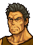

Opening Gomez, in reality

タニア
おまえは一人で逃げろ
やつらはわしが足止めする

やだ
逃げるんならオヤジも一緒だ！
おまえが一緒だと足手まといなんだ
だまって言うことを聞け！
もう・・・わかったよ・・・

おっと
逃げようったって
そうはいかねえ
おまえら
二人ともここで
くたばってもらうぜ！
ゴメス！
考えなおせ
おまえたちとは戦いたくない
もうたくさんなんだよ！
こんな荒れた土地たがやして
どうなるってんだ
どんなにがんばったって
満足に食えやしねぇ
あんたは
エーヴェルという
女ギツネにだまされてんだよ
いいとししてみっともないぜ
この色ぼけジジイが！
なんだと！
この、わしの使い走りだったこぞうが
大口たたくんじゃねぇ！
ようし
やってやろうじゃねぇか！
みんなまとめてかかってきやがれ！！
Talk: Osian → Tanya

タニア！
無事だったんだな
まったく心配させやがって・・・このバカ！
バ、バカってなによ、バカって！
だいたい
誰もあんたなんかに
心配してくれなんてたのんでないわよ！
おまえなぁ
こういうときくらい
もう少しすなおに感謝できないのかよ
なにさ！
そっちが
ケンカうってくるからじゃない！
・・・オーシンこそ
こういうときくらい
もう少し優しくしてくれたって・・・
わあっ、
ば、ばかっ、
なにも泣くこと・・・
いや、その、つまり、なんだ・・・
と、とにかく、よかったよ、無事で、うん
Talk: Leif → Dagdar

ダグダ、大丈夫か？
なんのこれしき
しかしまさか・・・リーフ王子が
きてくれるとは思わなかった
エーヴェルも一緒なのか？
・・・・・・
どうした？ 王子
・・・エーヴェルは・・・マンスターにいる
ぼくらの力では助け出せなかった・・・
なんだと！
王子たちは一体なにをしていたんだ！
どうしようもなかったんだ！
ぼくの力では・・・どうしようも・・・
・・・・・・
ぼくが・・・もう少しでも強ければ・・・
ぼくに・・・もう少しでも力があれば・・・
・・・王子、もういい
そんなに自分を責めるな
しかし・・・
すまん
ついどなってしまった
なにせ、思いもかけないことだったからな
しかし、考えてみれば
王子はそんなヤワな男ではない
悪いことを言った
ダグダ・・・
なあに、心配はいらん
これからはわしが王子を助けよう
エーヴェルにはかなわんかもしれんが
その辺の若造どもにはまだまだ負けん
そして
ともに
エーヴェルを取り戻しに行こう！
After seizing Leif learns the state of southern Thracia
ダグダはかわいそうだ
どうして彼らは
まじめに働けないんだろう

働きたくとも土地がないのです
あのものたちの多くは
トラキア農民の子どもでしょう
小さいときに捨てられて
やむなく山賊になった
そうでもしなければ
生きてゆけないということです
ばかな
自分の子どもを捨てる親がいるものか！
おや？
王子は流浪の身であったのに
飢えの苦しみはご存じないようですな
帝国に追われながら
日々の食物はどうなされてたのか？
食べ物？・・・ぼくは知らない・・・
でも
ひもじい思いをしたことはなかったな
王子はよき従者をもたれたようだ
だが、その感覚では
民の苦しみは理解できませんぞ
南トラキアは
国土のほとんどが険しい山
土地はやせ
気こうもきびしい
農民は死にもの狂いで働いているが
それでも食べてゆけない
みんな飢えて死ぬか
一人、二人をすてて生き残るか
王子
これは理屈ではない
トラキアの現実なのです
他国から食物を買えないのか？
北トラキアでは
どの街も食べ物であふれていたが
北トラキア諸国は盟約によって
南との交易を絶っています
特に食物については
きびしく監視されています
・・・どうしてそんなことを！？
直接の原因は１００年前の戦争ですが
状況が変わらないのは
たがいに理解しようとしないからです
特に
北トラキアの貴族は
利己的ですから
ぼくは
トラキア王国は好戦的な軍事国家だと
聞かされてきた
でも
そんな悲惨な現実があったなんて・・・
なぜなんだ？
なぜそれほどまでに憎しみあう？
もともと
ひとつの王国だったはずなのに・・・
それこそが
ゲイボルグ・グングニルという
二ふりの聖槍にまつわる悲劇なのです
民は導く者によって
かしこくも
おろかにもなる
王子には一国を統べるものとして
これから多くのことを学んでいただきたい
お父上のあやまちをくり返さぬために・・・
Gomez: battle quote
ちくしょう！
この不死身のゴメス様を
なめるんじゃねぇぜ！
Gomez: defeat quote
ダグダおやぶん
すまねぇ・・・
このままでは
みんな
飢え死にしちまうんだ・・・
Gomez: release quote
俺を助けるっていうのか・・・
くっ
あんたらには勝てねぇ
勝てねぇよお～！